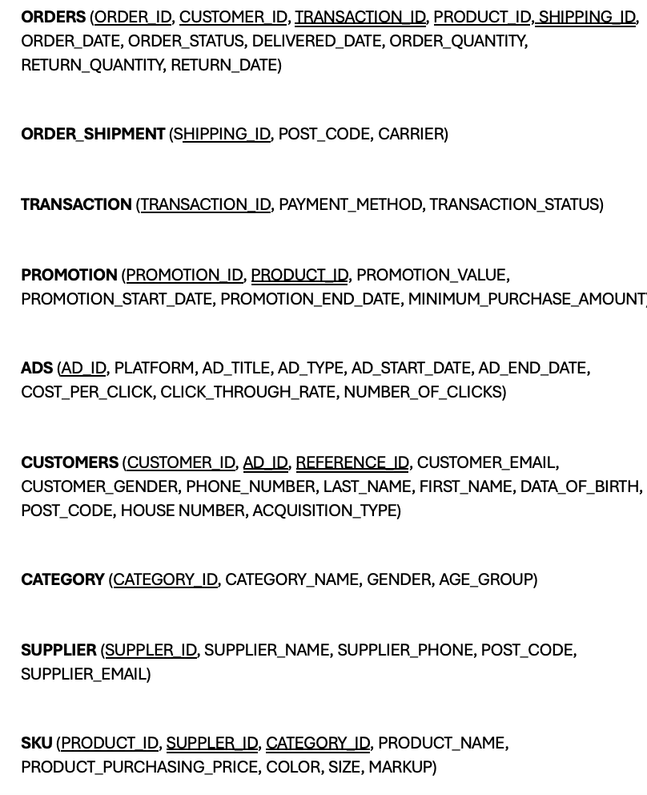

rm(list=ls())
library(readr)
library(RSQLite)
library(dplyr)title: "Group6_IB9HP0"
output: quarto::quarto_pdf
toc: trueGroup6_IB9HP0
Content of Table
{toc}
Introduction
This project undertook a comprehensive approach to data management for an apparel e-commerce retailer based in the UK, encompassing database design, data analysis, and reporting. The database architecture was structured around eight entities including products, customers, shipments, promotions, advertisements, suppliers, categories, and transactions, depicted through an Entity-Relationship (ER) diagram. An SQL schema was then implemented to substantiate this design. R was employed to generate synthetic data aligned with our schema to simulate real-world retail transactions. Rigorous data quality assurance was conducted before writing the data into the database. Subsequently, Quarto with R was utilised for data analysis to offer practical insights for strategic decision-making. Automation of data validation, loading, and analysis processes was achieved through a GitHub workflow, ensuring collaborative oversight and accountability throughout the project lifecycle.
Part 1: Database Design and Implementation
1.1: E-R Diagram Design
The E-R diagram contained eight entities and relationships, depicting the operational structure of an apparel e-commerce retailer based in the UK. It illustrated the journey of an order starting from a registered customer selecting a product (SKU), through to the order’s delivery, and handling of any subsequent returns. It also covered the process of customer acquisition through three main channels, organic, advertisement and referrals. Please refer to Appendix 1 for the definition of each attribute of each entity.
We made the following assumptions:
Product is tracked at the SKU level.
Promotion codes are applied at SKU level.
Customers must register before placing orders.
Third-party analytics (e.g., Apps flyer) is used for marketing and customer attribution, thus we can track paid customers are acquired from which ads.
One order can be paid by only one transaction.
One new customer can be referred by only one existing customer.
Customers can only return the order within 30 days from order placement date.
Every order will be delivered in one shipment.
Relationships Between Entities:
Our E-R diagram had three types of relationships between different entities, one-to-one, many-to-one, and many-to-many.
One-to-one:
- CUSTOMERS refers CUSTOMERS: A self-recursive relationship, in which one customer can refer another customer.
One-to-many:
SUPPLIERS supply SKU: One supplier can supply many products while one SKU is only provided by only one supplier.
CUSTOMERS acquired through ADS: One advertisement can be used to acquire many customers whilst one customer can only be acquired through one advertisement.
SKU belongs to CATEGORY: Many products can belong to one category.
PROMOTIONS apply to SKU: One promotion can be applied to many products.
CUSTOMERS pay TRANSACTIONS: one transaction can only be paid by one customer while one customer can pay multiple transactions.
Many-to-many:
CUSTOMERS order SKU: One customer can order many products and one product can be ordered multiple times.
SKU delivered through ORDER_SHIPMENT: Many products can have multiple order shipments.
1.2: SQL Database Schema Creation
In creating logical and physical schema, to satisfy 3NF normalisation, we ensured that (1) each attribute was single-value, (2) each table had its unique primary key, (3) all attributes in all tables represented distinctive information, (4) no inferred data was stored (e.g. calculated field), (5) in a table, except for the primary key, other attributes were not dependent on each other. Subsequently, considerations were made for data volume and performance requirements, selecting appropriate data types and indexes to optimise query performance. Based on these designs, the physical schema was created using the SQL, including table structures, indexes, and constraints. Notably, as ORDER is a many-to-many relationship, an ORDERS table was created in the logical and physical schema.
Derivation of Physical Schema
To derive the physical schema of the database, entity-relationship modeling and normalization were conducted initially. This involved identifying entities, attributes, and relationships, ensuring that the data model adhered to third normal form (3NF). Subsequently, considerations were made for data volume and performance requirements, selecting appropriate data types and indexes to optimize qu ery performance. Finally, based on these designs, the physical schema was created using the SQL language, including table structures, indexes, and constraints.
Logical Schema

Physical Schema
Creating a connection to a database
my_db <- RSQLite::dbConnect(RSQLite::SQLite(),"/cloud/project/ecommerce.db")- ADS
CREATE TABLE ADS(
AD_ID VARCHAR(30) PRIMARY KEY,
PLATFORM VARCHAR(255),
AD_TITLE VARCHAR(255),
AD_TYPE VARCHAR(70),
AD_START_DATE VARCHAR(15),
AD_END_DATE VARCHAR(15),
COST_PER_CLICK FLOAT,
CLICK_THROUGH_RATE FLOAT,
NUMBER_OF_CLICK FLOAT
);- CATEGORY
CREATE TABLE CATEGORY(
CATEGORY_NAME TEXT NOT NULL,
GENDER TEXT,
AGE_GROUP VARCHAR(30),
CATEGORY_ID VARCHAR(30) PRIMARY KEY
);- SUPPLIER
CREATE TABLE SUPPLIER (
SUPPLIER_NAME VARCHAR(50),
SUPPLIER_EMAIL VARCHAR(30),
SUPPLIER_PHONE NUMERIC(10),
POST_CODE VARCHAR(30),
SUPPLIER_ID VARCHAR(30) PRIMARY KEY
);- CUSTOMERS
CREATE TABLE IF NOT EXISTS CUSTOMERS(
CUSTOMER_ID VARCHAR(30) PRIMARY KEY,
ACQUISITION_TYPE TEXT,
REFERENCE_ID VARCHAR(30),
PHONE_NUMBER NUMERIC(10),
CUSTOMER_GENDER TEXT,
DATE_OF_BIRTH VARCHAR(15),
FIRST_NAME TEXT,
LAST_NAME TEXT,
CUSTOMER_EMAIL VARCHAR(30),
POST_CODE VARCHAR(30),
HOUSE_NUMBER INT,
AD_ID VARCHAR(30),
FOREIGN KEY (AD_ID) REFERENCES ADS (AD_ID)
FOREIGN KEY (REFERENCE_ID) REFERENCES CUSTOMER(CUSTOMER_ID)
);- PRODUCT
CREATE TABLE IF NOT EXISTS SKU(
COLOR TEXT,
SIZE TEXT,
PRODUCT_NAME TEXT,
PRODUCT_ID VARCHAR(30) PRIMARY KEY,
PRODUCT_PURCHASING_PRICE FLOAT,
MARKUP FLOAT,
SUPPLIER_ID VARCHAR(30),
CATEGORY_ID VARCHAR(30),
FOREIGN KEY (SUPPLIER_ID) REFERENCES SUPPLIER(SUPPLIER_ID),
FOREIGN KEY (CATEGORY_ID) REFERENCES CATEGORY(CATEGORY_ID)
);- PROMOTION
CREATE TABLE PROMOTION (
PROMOTION_ID VARCHAR(30) PRIMARY KEY,
PROMOTION_VALUE FLOAT,
PROMOTION_START_DATE VARCHAR(15),
PROMOTION_END_DATE VARCHAR(15),
MINIMUM_PURCHASE_AMOUNT FLOAT,
PRODUCT_ID VARCHAR(30),
FOREIGN KEY (PRODUCT_ID) REFERENCES SKU(PRODUCT_ID)
);- TRANSACTION
CREATE TABLE TRANSACTIONS (
TRANSACTION_ID VARCHAR(30) PRIMARY KEY,
PAYMENT_METHOD VARCHAR(50),
TRANSACTION_STATUS VARCHAR(50)
);- ORDER_SHIPMENT
CREATE TABLE ORDER_SHIPMENT(
SHIPPING_ID VARCHAR(30) PRIMARY KEY,
POST_CODE VARCHAR(30),
CARRIER TEXT
);- ORDERS
CREATE TABLE ORDERS (
ORDER_ID VARCHAR(30),
CUSTOMER_ID VARCHAR(30),
ORDER_DATE VARCHAR(15),
ORDER_STATUS TEXT,
SHIPPING_ID VARCHAR(30),
DELIVERY_DATE VARCHAR(15),
TRANSACTION_ID VARCHAR(30),
PRODUCT_ID VARCHAR(30),
ORDER_QUANTITY INTEGER,
RETURN_QUANTITY INTEGER,
RETURN_DATE VARCHAR(15),
PRIMARY KEY (ORDER_ID, PRODUCT_ID, CUSTOMER_ID),
FOREIGN KEY (PRODUCT_ID) REFERENCES SKU(PRODUCT_ID),
FOREIGN KEY (CUSTOMER_ID) REFERENCES CUSTOMERS(CUSTOMER_ID),
FOREIGN KEY (TRANSACTION_ID) REFERENCES TRANSACTIONS(TRANSACTION_ID)
FOREIGN KEY (SHIPPING_ID) REFERENCES SHIPMENT(SHIPPING_ID)
);Part 2: Data Generation and Management
2.1: Synthetic Data Generation
All synthetic data generation was conducted solely in R and saved into csv files before pushed to GitHub, ensuring adherence to attribute conditionalities and inter-entity connections with the support of LLM. Initially, Mockaroo was explored for data generation, but its high level of randomisation proved more complex compared to R for setting precise rules to control data values (see Figure 1).

Figure 1 - Customising data values in Mockaroo
In R, independent entities such as CATEGORY, SUPPLIER, PROMOTION, ADS, SKU and CUSTOMERS were created first. We asked LLM to generate values for CATEGORY_NAME, PRODUCT_NAME, SUPPLIER_NAME, AD_TITLE, tailored to the fashion retail industry (Figure 2 and 3). The generation of SUPPLIER_EMAIL and CUSTOMER_EMAIL utlised a function suggested by LLM (Figure 4). Postal codes were randomly generated from UK postcodes using “PostcodesioR” package drawing on data from Office for National Statistic (Walczak, E., 2021). Customer names were randomly created employing “randomNames” package (Betebenner, D.W., 2021). All numerical fields such PRODUCT_PURCHASING_PRICE, MARKUP, etc were randomised using either “runif” or “sample” functions to ensure realistic value distributions. Furthermore, for CUSTOMERS, REFERENCE_ID, denoting CUSTOMER_ID of the referees, was conditioned such that the referred customers were only included in our database after their referees. REFERENCE_ID was exclusively limited to customers with an ACQUISITION_TYPE of “Referral” while AD_ID was randomly assigned from ADS table for customers with an ACQUISITION_TYPE of “Paid”.
Please refer to Appendix xxx for the full prompt sequences in LLM.
[TO PASTE CUSTOMER NAME, POST_CODE GENERATION]
Figure 2 - LLM prompts for product name by category
Figure 3 - LLM prompts for supplier names.
Figure 4 - LLM prompt for email generation
Subsequently, dependent tables including ORDERS, ORDER_SHIPMENT and TRANSACTIONS were created based on the data from the previous tables. Specifically, in ORDERS, combinations of CUSTOMER_ID and PRODUCT_ID were randomly selected from SKU and CUSTOMERS tables so that a customer can purchase multiple products in an order. The generation of DELIVERY_DATE and RETURN_DATE adhered to constraints derived from ORDER_DATE, ensuring that DELIVERY_DATE fell within a maximum of 7 days after order placement, and RETURN_DATE occurred after DELIVERY_DATE while remaining within 30 days from ORDER_DATE. ORDER_STATUS was randomised to reflect an authentic distribution encompassing “Returned”, “Delivered” and “In transit”. RETURN_QUANTITY and RETURN_DATE was exclusively assigned to orders marked as “Returned”, with RETURN_QUANTITY restricted not to exceed ORDER_QUANTITY. Moreover, for TRANSACTIONS table, we also ensured that all orders have matching successful transactions, with the proportion of failed transaction set to 6% of total transaction numbers.
[paste create ORDER code]
2.2: Data Import and Quality Assurance
An R script was developed to load all data files in their respective corresponding tables within our database, ensuring robust data quality and integrity. This process involved connecting to the database and iteratively validating data entries against predefined criteria.
The script employed a loop cross-checking primary key values to prevent duplications and enforcing strict validation rules on a row by row basis. Entries were scrutinised for null values, adherence to formatting standards for phone numbers and emails, and non-negativity in numeric fields. For formatting check, we defined functions to automatically validate. Data entries satisfying these validation criteria were then appended to the database whilst problematic entries were recorded in “error_log.txt” file for further reviews.
[paste R script here]
Part 3: Data Pipeline Generation
3.1: GitHub Repository and Workflow Setup
We initiated our project by creating a new Git repository, connecting Posit Cloud/ RStudio to the repository and uploading essential files, including (1) database, (2) data schema, (3) synthetic data generation, (4) data validation and database writing, (5) data query and analysis scripts. This setup allows us to efficiently track changes and revert to previous versions as needed.
3.2: GitHub Actions for Continuous Integration
Part 4: Data Analysis and Reporting with Quarto in R
4.1: Advanced Data Analysis in R
Once the database was updated with the newly generated data via GitHub automation, the data was analysed utilising the R package packages dplyr, GGplot2, and tidyr in conjunction with the SQL DQL command. The procedure entailed retrieving the data and converting it into a format suitable for subsequent analysis. The complete procedure is outlined below.
Data Query
The data from the database was obtained using a SQL Data Query Language (DQL) statement. By utilising the calculated function and aggregate command, the data were converted into a format and value suitable for analysis. The following example is a query that displays the top 10 revenue earned by product SKUs in the previous 30 days, calculated by multiplying unit sales with the selling price.
# Query data from database and save into R data frame using RSQLite::dbGetQuery
Query_1 <- "WITH PRODUCTS AS(
SELECT PRODUCT_ID, SALES
FROM
(
SELECT
*,
ROW_NUMBER() OVER (ORDER BY SALES DESC) AS row_num
FROM
(
SELECT PRODUCT_ID, sum(order_quantity) as SALES
FROM ORDERS
WHERE DATE(ORDER_DATE) >= date('now','-30 days')
AND ORDER_STATUS = 'Delivered'
GROUP BY PRODUCT_ID
) T1
) T2
WHERE T2.row_num <= 10
)
SELECT T1.PRODUCT_ID, T2.PRODUCT_NAME, T1.SALES, T1.SALES*T2.SELLING_PRICE AS REVENUE
FROM PRODUCTS T1
LEFT JOIN (
SELECT DISTINCT PRODUCT_ID, PRODUCT_NAME, MARKUP * PRODUCT_PURCHASING_PRICE + PRODUCT_PURCHASING_PRICE AS SELLING_PRICE
FROM SKU ) T2
on T1.PRODUCT_ID = T2.PRODUCT_ID"
top_10_SKUs <- RSQLite::dbGetQuery(my_db, Query_1)Data Manipulation
Once the data was imported into a R data frame, data manipulation was carried out using R to prepare the data for visualisation. The following code example generates a new column containing the SKU description, followed by a reordering by unit sold.
# Create product description name of each product_ID for using in analysis
top_10_SKUs$name_sku <- paste(top_10_SKUs$PRODUCT_NAME, top_10_SKUs$PRODUCT_ID, sep = "_")
top_10_SKUs$PRODUCT_ID <- factor(top_10_SKUs$PRODUCT_ID,
levels = top_10_SKUs$PRODUCT_ID[order(top_10_SKUs$SALES)])Data visualisation
Finally, once we retrieved and formatted the data for analysis, we used the ggplot2 package to create visual representations of the data. The code snippet shown below demonstrates a bar chart that visually represents the top 10 SKUs with the highest sales in the past 30 days, as obtained from the preceding phases of our query.
ggplot(top_10_returned_SKUs, aes(x = PRODUCT_ID, y = as.numeric(SALES))) +
geom_bar(stat = "identity", fill = "steelblue") +
labs(x = "Product Names", y = "Units Returned", title = "Top 10 Most Returned SKUs",
subtitle = "Labels indicate the money to be refunded back to the customers") +
coord_flip() +
theme(axis.text.x = element_text(hjust = 1)) +
scale_x_discrete(labels =top_10_returned_SKUs$name_sku) +
scale_y_continuous(breaks = seq(0, max(as.numeric(top_10_returned_SKUs$SALES)),
by = 1)) +
geom_text(aes(label = paste("£",round(REVENUE),sep="")), hjust = -0.2)Task 4.2: Comprehensive Reporting with Quarto
To present the data analysis, we use the R Quarto report, which can be easily changed to reflect the latest dataset. The analysis was divided into two parts. The first is a short-term analysis for monitoring current performance in the last thirty days. The second is performing long-term analysis, where we analyse changes on a yearly basis to demonstrate long-term progress.
Short-Term Analysis


Long-Term Analysis